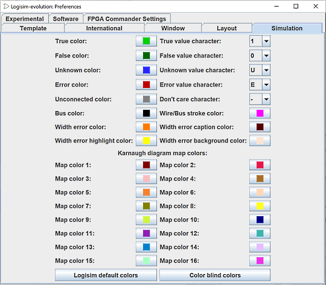

הכרטיסייה סימולציה

כרטיסייה זו כוללת העדפות המשפיעות על צבעי החוטים במהלך הדמיות וכן על הצבעים שבהם נעשה שימוש עבור דיאגרמות קרנו
בחלק העליון מוגדרים צבעי החוטים במצבים השונים של הסימולציה וכן התווים שישמשו בהצגת מצב הקווים.
בחלק התחתון, אלו הם הצבעים המשמשים לייצוג הקבוצות בדיאגרמות קרנוט.
השימוש פשוט, לחץ על הכפתורים ומופיע בורר צבע. לאחר מכן תוכל לבחור ולשנות הצבע.
קיימים שני לחצנים, צבעי ברירת מחדל כדי לחזור לצבעי ברירת המחדל וצבעים עיוורי צבעים לסביבה המקלה על הקריאה של אנשים עם קשיים עם תפיסת צבע.
הבא: הלשונית פריסה.